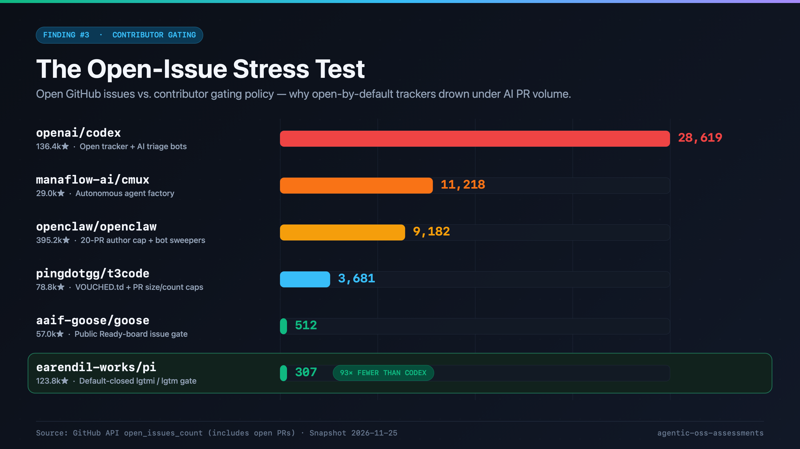
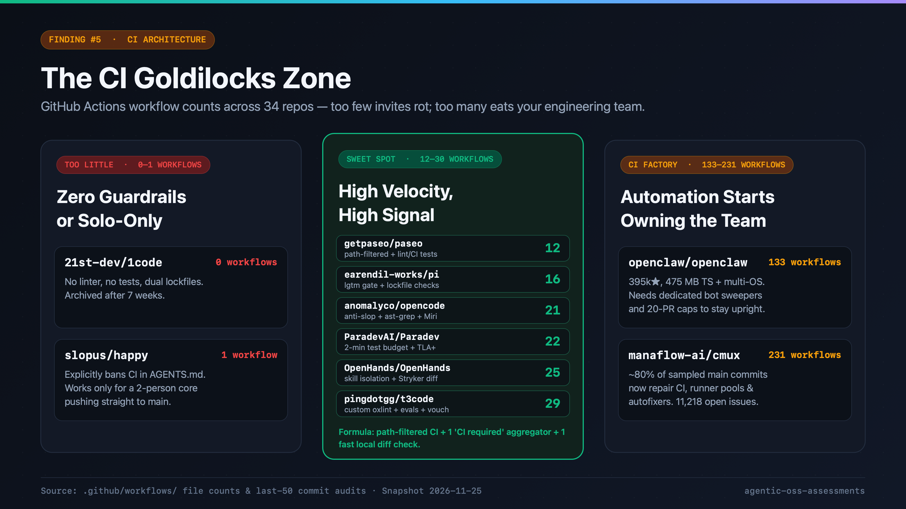
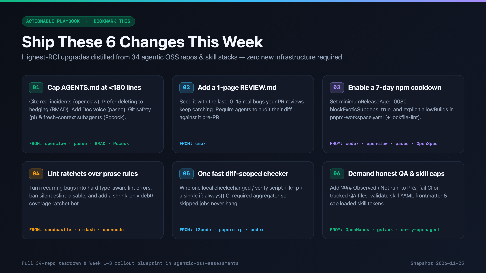

I Audited 34 Open-Source AI Coding Repos (2.90M Stars). Here's What Actually Works.
Primary-source engineering teardown of 24 coding harnesses & orchestrators (t3code, openclaw, opencode, pi, codex, gemini-cli, OpenHands, cline, goose, paperclip, paseo, happy, cmux, Paradev, emdash, oh-my-openagent, beads, symphony, bolt.diy, claude-squad, costrict, 1code, vibe-kanban, Roo-Code) plus 10 leading agent skill, spec & sandbox stacks (mattpocock/skills, mattpocock/sandcastle, obra/superpowers, github/spec-kit, garrytan/gstack, Fission-AI/OpenSpec, gsd-build/get-shit-done, bmad-code-org/BMAD-METHOD, backnotprop/pstack, michael-denyer/pstack-claude).
Most advice on running AI coding agents comes from toy demos or blog posts.
I wanted real receipts, so I pulled primary-source snapshots via the GitHub API across 34 open-source agentic coding, harness, orchestration, and skill-stack repositories (2.90M combined stars as of November 2026). I inspected their actual AGENTS.md and CLAUDE.md files, linter plugins, CI workflows, dependency configs, contributor gates, eval labs, and recent commit histories.
Four of those 34 repos have already archived or begun sunsetting. Several others are shipping 50 commits every 2 to 15 hours without melting down.
The gap between the two groups comes down to eight concrete engineering realities. Every one of them is stealable this week.
1. What Killed the 4 Repos That Died (or Sunset)
Launch stars did not save a single one of them:
21st-dev/1code(5.6k★ — archived in 7 weeks): Zero CI workflows, zero linter, zero tests, dual lockfiles (bun.lock+bun.lockb), a one-way public mirror script, and aCLAUDE.mdstill listing already-shipped features as "Planned WIP."BloopAI/vibe-kanban(28.8k★ — sunsetting): Legitimate systems craft (ts-rscodegen checks,sqlxoffline verification,clippy -D warnings), crushed by scope sprawl — 30 Rust crates, ElectricSQL, a WebRTC relay, Tauri, and Rust nightly on a 4-person team.RooCodeInc/Roo-Code(24.2k★ — archived May 2026): Stayed coupled to a VS Code extension while every surviving peer (Cline,OpenHands,Goose) decoupled into a standalone SDK and multi-surface ACP control plane. Its enterprise fork (costrict) now sits mostly on one maintainer carrying 15 MB of inherited@roo-code/*scaffolding.gsd-build/get-shit-done(64.1k★ — archived May 31, 2026): Hit a maintainer/supply-chain compromise warning right in git history (126b6b9e: "WARNING: This repository appears compromised") and migrated toopen-gsd/gsd-corewith anauto-close-deprecated.ymlshutdown workflow. Prompt and skill packages carry the exact same supply-chain risk as code dependencies.
The pattern: Scope sprawl, missing mechanical gates, and weak supply-chain hygiene kill agent-heavy projects far faster than missing features.
2. Stop Lecturing Agents in AGENTS.md. Make the Linter Reject Them.
The worst pattern in the cohort is treating AGENTS.md as an encyclopedia or shouting louder when agents break rules.
oh-my-openagent has a 70.8 KB, 479-line ALL-CAPS AGENTS.md (duplicated verbatim in CLAUDE.md) screaming at agents to run QA — and its own generated header was already 3 months stale. gstack splits 54 KB across both AGENTS.md (18.6 KB) and CLAUDE.md (35.5 KB).
Compare that with the healthiest repos in the study:
openclaw/openclaw(395k★, 50 commits / 2.3 hrs): Hard-capsAGENTS.mdunder 20,000 characters with one strict governance rule: "A new rule cites an incident." It also includes an explicit anti-overengineering directive ("Choose good compromises"): use cheap, recoverable mechanisms (idempotency key, one check, retry) instead of speculative machinery, and document accepted edge cases rather than coding for them.bmad-code-org/BMAD-METHOD(55.7k★): Keeps a crisp 35-lineAGENTS.mdwith one unforgettable line: "Length and ambiguity are paid on every run; a corner case is paid only when it occurs. Prefer deleting an instruction to hedging it."getpaseo/paseo(25k★): Includes aDoc voicerule explicitly banning LLM prose tics ("It's not X, it's Y","robust","seamless","and that matters","It's worth noting") and requiring agents to integrate doc edits rather than appending paragraphs to the bottom.manaflow-ai/cmux(29k★): Keeps a compactREVIEW.mdlisting the recurring bugs code review keeps catching. Agents self-audit their diff against it before opening a PR.paperclipai/paperclip(117k★): Stores domain rules inrules/*.mdcwith frontmatter headers so agentsgreponly the headers relevant to their diff instead of paying 20k tokens per turn.- Single source of truth:
t3code,Paradev,emdash, andbeadsmakeCLAUDE.mda 1-line@AGENTS.mdinclude or symlink. Every repo that copy-pasted the two files introduced drift.
Once a mistake happens twice, the best teams move the rule out of prose and into a hard lint error:
mattpocock/sandcastle(9.3k★, 2.6 MB TS): The cleanest small-repo engineering straitjacket in the entire 34-repo study. Turns on all 5oxlintcategories (correctness,suspicious,pedantic,perf,style="error") with type-awareoxlint-tsgolint, bansEffect.run*outside entry points viano-restricted-properties, runstests/docs-guide.test.tsto keepGLOSSARY.md↔docs/guide/↔README.mdmechanically synced, and runs an automated shrink-only ratchet PR bot (lint-shrink.yml) on every push tomainthat lowers lint/test debt baselines and raises the E2E coverage floor automatically.opencode: Ships customanti-slopoxlintplugins + unit-testedast-greprules targeting LLM coding tics (no-widen-then-assert,no-module-mocking,require-safety-comment-for-type-assertion).openclaw: Setscorrectness,perf, andsuspiciousto"error", plusno-floating-promisesandswitch-exhaustiveness-check.Paradev: UsesnoRestrictedImportsinbiome.jsoncto ban sync subprocesses on serving loops, raw sandbox handles, and cross-tenant admin queries.emdash: SetsrespectEslintDisableDirectives: falseso agents cannot silence lint failures witheslint-disable, bans writes to sensitive Drizzle tables outside their sole owner, and runs self-pruning allowlists (prune:boundary-allowlists).paseo: Uses per-file, per-API debt allowlists (paseo/no-sync-ionaming exact functions per file — never directory-wide disables) and unit-tests its own lint plugin in CI.
3. The Open-Issue Stress Test: Contributor Gating Is Mandatory
When anyone can prompt an agent to open a PR in 90 seconds, open-by-default trackers drown. The numbers across the cohort are stark:

openai/codex(136.4k★, open tracker + AI triage bots): 28,619 open issuesmanaflow-ai/cmux(29.0k★, autonomous agent factory): 11,218 open issuesopenclaw/openclaw(395.2k★, 20-PR author cap + bot sweepers): 9,182 open issuespingdotgg/t3code(78.8k★,VOUCHED.td+ PR limits): 3,681 open issuesaaif-goose/goose(57.0k★,Ready-board gate): 512 open issuesearendil-works/pi(123.8k★, default-closedlgtmi/lgtmgate): 307 open issues — a 93× reduction vs. Codex
The top skill repos reached the exact same conclusion:
obra/superpowers(326.5k★, 372 open issues) opensAGENTS.mdwith: "This repo has a 94% PR rejection rate." It requires a human-written summary under 200 words, mandatory model/harness/version disclosure, bans fixing other people's issues unasked, and bans "compliance" rewrites without eval proof.mattpocock/skills(332.8k★, 251 open issues) andFission-AI/OpenSpec(75.7k★, 214 open issues) restrict PRs to collaborators/invited authors (SCOPE.md+.out-of-scope/).getpaseo/paseostates the new reality of open source in one paragraph ofCONTRIBUTING.md:
"I can prompt an agent to write code just as you can. The bottlenecks are choosing what to build, shaping it, verifying its behavior, and taking responsibility for its maintenance."
Other high-signal governance tricks worth copying:
OpenHands: Enforces a human-onlyHUMAN:section in every PR description (pr-description-check.yml) and restrictsready-for-devto maintainers.cline: Automatically strips promotional AI-agent badges and footers from PRs and comments (repo-strip-agent-badges.yml).
4. Stop Agents From Gaming Your Tests
Agents optimize for green checks. Left unconstrained, they weaken assertions, run filtered test commands that silently skip 0 tests, or treat a skipped CI job as green coverage.
Five repos built mechanical defenses against this:
- Verification Skill Independence (
OpenHands):verify-skill-isolation.ymlfails CI if a PR modifies both production code and verification skills/eval harnesses in the same PR. The implementor cannot rewrite the grading rubric. - Diff-Scoped Mutation Testing (
OpenHands):stryker-diff.mjsruns mutation testing strictly on changed lines so AI-written tests must actually kill mutants instead of padding line coverage. - Uncommitted Local QA Evidence +
sha256sumProof (oh-my-openagent): Agents must drive the real harness in an isolated sandbox, save plain-text captures under gitignored.omo/evidence/, and paste decisive excerpts +sha256sumlines in the PR body. A CI audit (tracked-evidence-paths-audit.test.ts) fails the build if any evidence file is accidentally committed. (t3codeenforces the same rule for.github/pr-assets.) - Honest Disclosure & Anti-Vacuous Checks (
cmux,beads):cmuxrequires an### Observed / Not runsection in every PR body and explicitly warns that "a skipped job is green and is not coverage."beadsmandates verifying that filtered test runs actually executed >0 subtests and answeringNOT_ENOUGH_INFOwhen evidence runs out. - Anti-Fragile Test Bars (
gstack,gsd):gstack'stest-value-barbans fragile prose-pin unit tests, andgsd'slint-no-source-grep.cjsforbids tests that merelyfs.readFileSync+ regex source strings instead of running behavior.
5. The CI Goldilocks Zone (0 vs. 231 Workflows)
More CI is not automatically better. The 34 repos expose a clear Goldilocks zone:

- Too little (
0–1workflows):1code(0) archived in 7 weeks.slopus/happy(1 workflow — itsAGENTS.mdliterally bans adding GitHub Actions because "Actions minutes cost real money") only survives because a tight 2-person core pushes directly tomainand ships paired native Swift/Kotlin commits in lockstep. - Too much (
133–231workflows):manaflow-ai/cmuxhas 231 GitHub Actions workflows and an autonomousgh-merge-greenloop requiring zero human approval. Look at its last 50 commits onmain: ~80% of sampled commits are repairing the CI runner pools, nightly pickers, and autofixers themselves, while user issues sit at11,218. When the CI factory consumes your daily engineering bandwidth, the automation owns you. - The sweet spot (
8–30workflows):sandcastle(8),paseo(12),pi(16),opencode(21),Paradev(22),OpenHands(25),spec-kit(29), andt3code(29).
The winning CI formula across all of them:
- Path-filtered jobs paired with one
if: always()CI requiredaggregator job (codex,t3code) so skipped jobs never hang branch protection. - One fast diff-scoped local command (
vp run check:changed,pnpm verify,verify-local.py --receipt -) so agents stop running 15-minute repo-wide suites locally. (opencodeliterally sets root"test": "echo 'do not run tests from root' && exit 1".)
6. What 10 Agent Skill & Workflow Stacks Taught Us (Pocock, gstack, pstack, superpowers & Peers)
Adding the 10 largest skill, spec, and workflow repos (1.17M stars on their own) turned up the single most honest receipt in the entire study.
garrytan/gstack (142.6k★, 45.1 MB TS, 38 workflows) ran a real 100-task GitHub bug/feature benchmark in its own README.md:
- Opus 5.5 solved 58 tasks with
gstackvs. 61 of 99 without it (and 29 vs. 29 on 60 security fixes). - Its own conclusion: "Use gstack for the workflow, the reviews, the shipping steps and the safety guards, not for a higher fix rate."
Prompt stacks do not boost raw model intelligence. The ones that earn their tokens do so through context discipline, workflow ergonomics, and mechanical verification:
mattpocock/skills(332.8k★ — #1 skills repo on GitHub): Explicitly critiques heavy spec/role frameworks (GSD, BMAD, Spec-Kit) inREADME.md("they take away your control and make bugs in the process hard to resolve"). Instead it ships focused, composable skills in a 5-bucket lifecycle (engineering/,productivity/,misc/,in-progress/,deprecated/), enforcesdisable-model-invocation: truefor destructive/manual flows, validates everySKILL.mdwith the installer's exact YAML parser (check-frontmatter.mjs), and enforces a fresh context window rule for subagents (critical on Codex, which forks parent context by default).gstack(142.6k★): Treats skills like production code —.tmpl→SKILL.mdcodegen,catalog-budget.test.ts(2,292-token cap) +context-budget-ratchet.test.tsso adding skills never bloats every turn,test/egress-receipt-wiring.test.tsrequiring a local egress receipt before any off-machinecurl/fetch, and$150/wk-capped pre-registered eval sweeps (3-trial panels, median-of-3 judges).pstack(Lauren Tan /potetoat Cursor; portsbacknotprop/pstack&michael-denyer/pstack-claude, 10k★ combined): Built around "if you want to go fast, go deep first." Its standout artifact is/create-formal-verification-skill, which generates project-local TLA+ (48.8 KB) and Lean (52 KB) verification skills from your codebase.pstack-claudeadds build-time Cursor→multi-harness translation,tools/forks.jsondeclared-fork tracking, and prompt-injection hardening inwatch-pr(excluding fork PRs + stripping control chars).github/spec-kit(151.4k★): First repo in the study using GitHub Agentic Workflows (gh-aw) compiled.md→.lock.ymlinside digest-pinned firewall containers (gh-aw-firewall/agent,squid, domain allowlist, constrainedsafe-outputs).Fission-AI/OpenSpec(75.7k★): Shipstest/cli-e2e/startup-modules.test.tsto prevent CLI cold-start regressions (after cutting boot from 485 modules / 0.5s) and uses npm OIDC trusted publishing.
7. The Boring Infra Wins Almost Everyone Misses
Buried inside config files across these 34 repos were seven small, high-leverage tricks that take under an hour to adopt:
- 10-line npm supply-chain cooldown (
codex,openclaw,OpenHands): ```yaml # pnpm-workspace.yaml minimumReleaseAge: 10080 # 7-day cooldown on new npm publishes minimumReleaseAgeStrict: true blockExoticSubdeps: true allowBuilds: esbuild: true ```openclawadds dated expiry comments on every temporary exemption;paseopairs this withlockfile-lintin CI;OpenSpecputs GHSA-annotated overrides inpnpm-workspace.yaml(notingpackage.jsonpnpm.overridesreplaces rather than merges). - Automated shrink-only ratchet bot (
mattpocock/sandcastle):lint-shrink.ymlruns on every push tomainand opens a tiny PR lowering baseline lint/test debt and raising the E2E coverage floor whenever a merged PR improved things. Technical debt only moves in one direction. - Lock-safe migrations + real backup/restore CI (
Paradev,paperclip):Paradevprefixes Drizzle migrations withlock_timeout = '5s'andset -euo pipefail.paperclipspins up real Postgres 17 in CI, seeds data, runspg_dump, restores, and verifies integrity. - Production Docker boot smoke test (
bolt.diy) + real OS sandbox CI (sandcastle):bolt.diyboots its production container in CI and pollshttp://127.0.0.1:5173/.sandcastleruns real Bubblewrap (bwrap) + macOS + Windows containment tests in CI instead of mocking sandboxing. - Prompt-prefix KV-cache & skill-catalog budget tests (
openclaw,gstack):prefix-stability.test.tsensures system prompts and tool definitions serialize identically across turns;catalog-budget.test.tshard-caps loaded skill frontmatter tokens. - Multi-agent Git & machine isolation (
pi,paseo,oh-my-openagent,happy,mattpocock/skills):• Bangit add -A,git stash, andgit reset --hard; review PRs without switching branches (pi).• Require fresh context windows for subagents so reviews and research stay unpolluted (mattpocock/skills).• Bind dev daemons to checkout-local.dev/<app>-home(paseo) and add root meta-tests failing if any test writes to real$HOME(oh-my-openagent).• Release only from a clean localmain == origin/main— never from a worktree (happylearned this after a stale-worktree OTA rolled 4 shipped fixes off every user's phone). - **Autonomous maintenance bots work — after the gates exist:** In
beads(gascity-eddie[bot], 41/50 recent commits),paseo(paseo-bot[bot], 15/50),sandcastle(lint-shrink.yml), andopencode(opencode-agent[bot], 2,766 commits), bots reliably burn down routine bug and debt backlogs because strict linters, tests, and scope workflows constrain what they can touch.
8. The 6 Changes to Ship on Your Repo This Week
If you run a TypeScript monorepo with coding agents today, start here:

- Trim
AGENTS.mdto <180 incident-cited lines, symlinkCLAUDE.md, and addpaseo'sDoc voice,openclaw's "Choose good compromises",pi's multi-agent Git safety rules, andmattpocock/skills's fresh-context subagent rule. - Add a 1-page
REVIEW.mdseeded from the last 10–15 bugs caught in your PR reviews. - Add
minimumReleaseAge: 10080+allowBuildstopnpm-workspace.yaml(or--min-release-age=7on npm). - Encode your top 3–5 architectural invariants as hard lint errors — ban silent
eslint-disableescapes, and add a shrink-only debt/coverage ratchet (sandcastlestyle). - Wire one fast diff-scoped local checker (
check:changed/verify) +knip+ a singleif: always()CI requiredaggregator job. - Add
### Observed / Not runto your PR template, fail CI if temporary QA/scratch files get tracked, and cap loaded skill tokens if you ship skills.
All 34 repo assessments, raw GitHub API snapshots, and the full tiered playbook are tracked in agentic-oss-assessments.